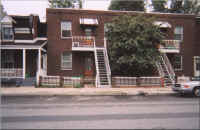
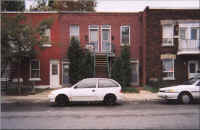

|

Maisonneuve
began as a private town, founded in 1883 by a group
of developers who wanted to make it a French-Canadian
working-class town by attracting industries to their
territory. They were very successful, but they
went too deep into debt trying to beautify their town, and it was
annexed to the City of Montreal in 1910. Charles and
Ézilda moved in 1925 to 2179
Létourneux, a modest three-room flat. Ézilda lived there
until her death in 1964. They are in fact two-storey
row flats set back from the sidewalk (a detail
showing how modern these flats were compared with the
old flats in other neighbourhoods, which stood right on the
sidewalk). Behind were shed-stables, and on
the other side of the lane, people grew big vegetable gardens
on the vacant lots for many years.
Thanks to
Francine, who went to explore the area with her camera in
the summer of 2001, we have pictures of what has become of 2179
Létourneux.
|
SURPRISE:
where there used to be eight flats, there are now only four!
(
don't forget to click on the photos to see them
better) |
|

|
Charles and Ézilda
lived on the second floor, on the left. This
flat now also takes in the flat of the
neighbour, Mlle Beaupré, a single woman who married
late in life and became Mme Savaria. |
 |
|

|
Here is the same
building, seen from the back.
The balcony on
which the Consigny family took so many photos, looking
for better light than indoors, is
now bigger. There is still a small
storage space at the end. |
|
|
|

|
Farther south from
2179, Francine found flats identical to
the ones the Consignys knew, minus the
tree. The windows and doors have been replaced,
and the brick probably redone. The
"jalousies" (louvred shutters) are gone.
Let's hope the current tenants have been
given hot water and a bathroom, but where? These
flats are so small. |
|
|
|

|
Another photo
showing flats the same size as the ones
the Consignys knew. |
|
|
|

|
Now here is
a back view of these old flats. The old
sheds have been torn down in this case. |
|
|
|

|
But here those old
sheds are still standing; at the very beginning they
were used as stables. |
|
|
|

|
View of the lane
on the east side of rue Létourneux, north of the railway
tracks. Only one block of sheds is left.
2179
is level with the red car.
|
|
|
|

|
Back at
the front, north of the Consignys' old flat,
the "Poirier house" still stands: a
small single-family house belonging to the Poirier family, one of whose daughters, Yvonne, was a childhood friend
of Jacqueline's.
|
|
|
|

|
|

|
|